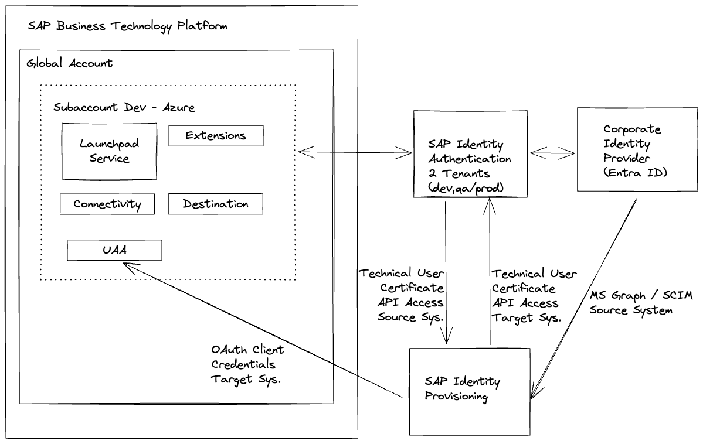
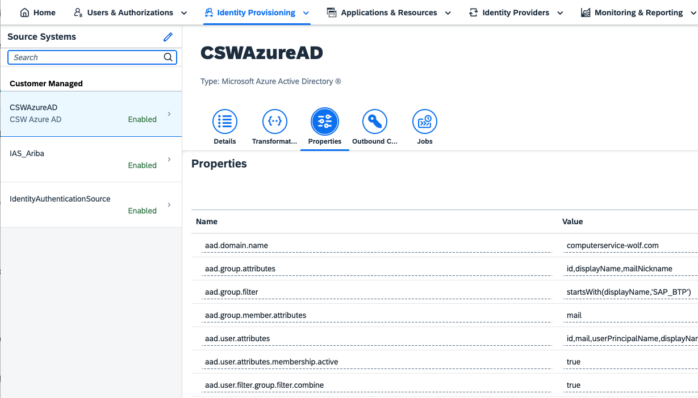

BTP Free Tier
Praktische Hans-On Einblicke
Gregor Wolf
Themen
- Einrichtung SAP Identity Provisioning und SAP Identity Authentication mit Microsoft Entra ID (früher Azure AD)
- Monitoring der SAP HANA Cloud mit SAP Cloud ALM
- On Premise Verbindung über den SAP Cloud Connector
- BTP ABAP Environment
MS Entra ID, IPS, IAS und BTP

Microsoft Entra ID als IPS Quellsystem

Monitoring der SAP HANA Cloud
mit SAP Cloud ALM
SAP TechEd 2022: XP261 - Operating Your SAP BTP Platform Environment with SAP Cloud ALM
On Premise Verbindung über den
SAP Cloud Connector
BTP ABAP Environment
Empfehlung: Landscape Portal mit dem Label "environment" und dem Wert "ABAP" versehen. Dann ist es über die Suche schnell auffindbar.
Kontakt
Gregor Wolf,
Computerservice Wolf
gregor@computerservice-wolf.com
@gregorw@chaos.social
| Visitenkarte | |||
|---|---|---|---|

|